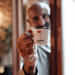

Форум
На цій сторінці можна спілкуватись відвідувачам, ділитись відгуками, висловлювати поради адміністрації щодо кращої роботи сайту і т.д.
Маргарита Іванівна
Я просто обожнюю чай. Знаю безліч рецептів і хочу поділитись ними із такими ж прихильниками чаю, як і я. Наприклад, ви ви знаєте що існує рецепт мароканського чаю з пряностями? Чи можна буде опублікувати мої записи на сторінці рецептів?
Адміністрація сайту
Шановна Маргарита Іванівна! Ми з радістю опублікуємо Ваші рецепти, що стосуються чаю. Тішимось з того, що відвідувачі наповнюють сайт своїми матеріалами. Присилайте через форму зворотнього зв'язку Ваші записи. Завжди раді співпраці з нашими читачами!

Дядя Паша
Дякую за чудовий сайт! За деякими рецептами робив чай. Сподобалось
Max
Добрий день. А чому так мало записів в розділі «Події»? Невже так мало подій відбувається у світі чаю.
Адміністрація сайту
Шановний Max! Нажаль, справді, в світі чаю подій майже зовсім не відбувається. Спочатку коронавірус, а потім війна вплинула на це. Але після перемоги (а вона обов'язково буде) ця сторінка буде заповнена повністю!
Шалений Боб
Сайт цікавий. Багато потрібної інформації. Але я ще люблю каву. Чи плануєте щось зробити таке про каву? Було б добре почитати, бо по цілому світу кавоманів не менше є, аніж прихильників чаю.
Адміністрація сайту
Шановний Шалений Боб! Дякуємо за позитивну оцінку сайту. Але наразі не плануємо робити сайт про каву, хоч і визнаємо, що прихильників кави є неменше.
Валік
Дуже люблю міцний чай. Чи можете написати десь в розділі «Статті» чи існує залежність від чаю. Наскільки це небезпечно? Дуже переживаю з приводу цього.
Адміністрація сайту
Шановний Валік! Найближчим часом вийте стаття-коментар лікаря з яким наш сайт співпрацює з приводу чайної залежності. Слідкуйте за статтями.